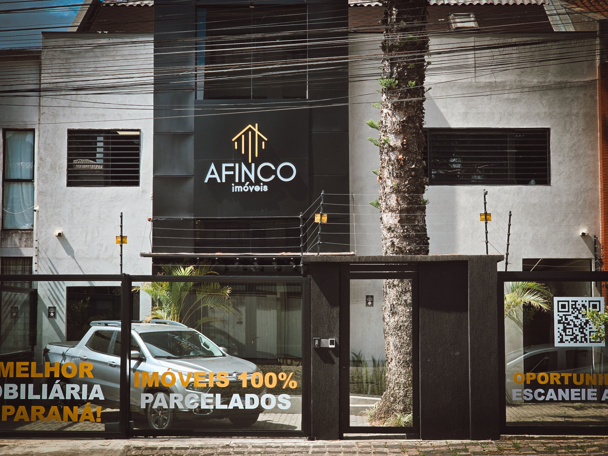
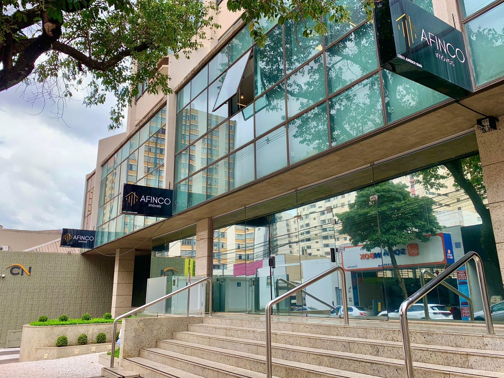

Miguel Vaz
Gerente Comercial
Vaga em Curitiba, no Minha Casa Minha Vida
A AFINCO procura pessoas para fazer o primeiro atendimento de quem quer comprar pelo Minha Casa Minha Vida. Você aprende tudo no treinamento, e a negociação fica com os corretores.
Seu trabalho é a primeira etapa do atendimento. Você encontra quem quer sair do aluguel, entende o que a família precisa e entrega o cliente pronto para o corretor.
Você aborda pessoas interessadas no Minha Casa Minha Vida.
Apresenta a AFINCO e escuta o que a família procura.
Confere se o perfil se encaixa no programa e organiza as informações do cliente.
O corretor assume a negociação e o contrato. Você segue para o próximo atendimento.
Se você gosta de conversar com pessoas e quer aprender uma profissão, a gente ensina o resto. Vale mais a sua vontade de aprender do que o seu currículo.
Quero me candidatarGente do comercial e do cadastro conta como é a rotina na AFINCO.
Gerente Comercial
Setor de Cadastros
Setor de Cadastros
Setor de Cadastros
Duas em Curitiba, no bairro São Francisco, e uma no centro de Londrina.


Leva cerca de 3 minutos, direto pelo celular.
Cada candidatura é lida por uma pessoa do time.
Pelo WhatsApp que você informar no formulário.
E aprende o trabalho do zero, com acompanhamento.
Ficou alguma pergunta? O time de recrutamento responde no WhatsApp.
Falar com o recrutamentoNão. O treinamento começa do zero. E você não negocia nem fecha vendas. Essa parte fica com os corretores.
Não. Os ganhos variam conforme o seu desempenho, e quem vai bem pode passar desse valor. Na conversa com o recrutamento você entende o modelo de remuneração em detalhes.
Você atua como prestador de serviço, com CNPJ próprio, sem carteira assinada. Se você ainda não tem CNPJ, tire suas dúvidas com o recrutamento antes de começar.
Sim. O trabalho é presencial, junto com o time da AFINCO em Curitiba.
A base é no bairro São Francisco, em Curitiba. A AFINCO também tem unidade no centro de Londrina.
É o programa do governo federal que ajuda famílias a comprar o primeiro imóvel com condições facilitadas. Você aprende como ele funciona no treinamento.
Preencha com calma. Leva cerca de 3 minutos, e seus dados ficam só com o time de recrutamento da AFINCO.
O time de recrutamento vai analisar seu perfil e chamar você no WhatsApp que você informou.
Falar com o recrutamento